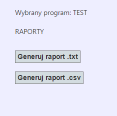
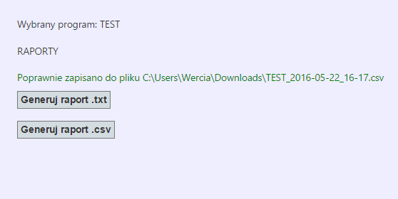
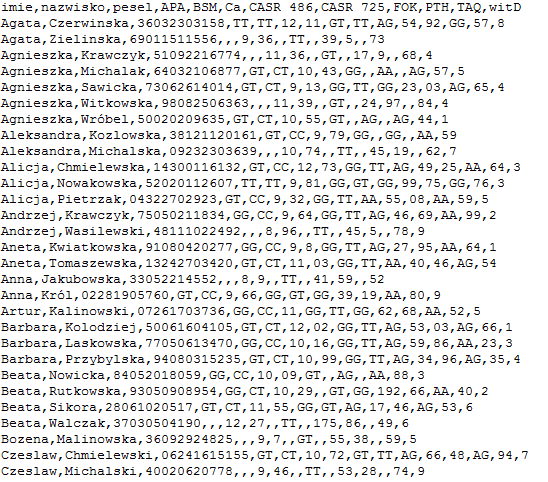
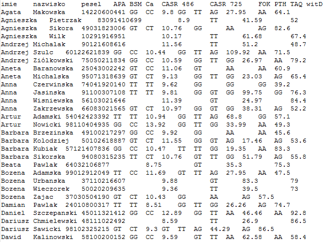

Po wybraniu opcji Raport dla danego programu wyświetli się panel raportu:

Po jego pobraniu wyświetli się komunikat ze ścieżką do pliku (domyślnie plik jest zapisywany w folderze Pobrane użytkownika).

Raport zawiera wyniki (wszystkich zmiennych projektu) dla wszystkich pacjentów projektu. Istnieje możliwość wygenerowania raportu w formacie .txt i .csv.
Przykładowa struktura wyników (format .csv):

Przykładowa struktura wyników (format .txt):

Created with the Personal Edition of HelpNDoc: Benefits of a Help Authoring Tool